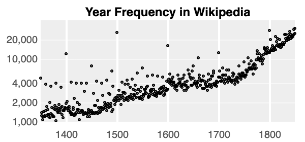

Large language models are making it possible for computers to write stories, program a website and turn captions into images.
One of the first of these models, BERT, is trained by taking sentences, splitting them into individual words, randomly hiding some of them, and predicting what the hidden words are. After doing this millions of times, BERT has “read” enough Shakespeare to predict how this phrase usually ends:
This page is hooked up to a version of BERT trained on Wikipedia and books.¹ Try clicking on different words to see how they’d be filled in or typing in another sentence to see what else has BERT picked up on.
Besides Hamlet’s existential dread, the text BERT was trained on also contains more patterns:
Cattle and horses aren’t top purchase predictions in every state, though! In New York, some of the most likely words are clothes, books and art:
There are more than 30,000 words, punctuation marks and word fragments in BERT’s vocabulary. Every time BERT fills in a hidden word, it assigns each of them a probability. By looking at how slightly different sentences shift those probabilities, we can get a glimpse at how purchasing patterns in different places are understood.
You can edit these sentences. Or try one of these comparisons to get started:
To the extent that a computer program can “know” something, what does BERT know about where you live?
This technique can also probe what associations BERT has learned about different groups of people. For example, it predicts people named Elsie are older than people named Lauren:
It’s also learned that people named Jim have more typically masculine jobs than people named Jane:
These aren’t just spurious correlations — Elsies really are more likely to be older than Laurens. And occupations the model associates with feminine names are held by a higher percentage of women.
Should we be concerned about these correlations? BERT was trained to fill in blanks in Wikipedia articles and books — it does a great job at that! The problem is that the internal representations of language these models have learned are used for much more – by some measures, they’re the best way we have of getting computers to understand and manipulate text.
We wouldn’t hesitate to call a conversation partner or recruiter who blithely assumed that doctors are men sexist, but that’s exactly what BERT might do if heedlessly incorporated into a chatbot or HR software:
Adjusting for assumptions like this isn’t trivial. Why machine learning systems produce a given output still isn’t well understood – determining if a credit model built on top of BERT rejected a loan application because of gender discrimation might be quite difficult.
Deploying large language models at scale also risks amplifying and perpetuating today’s harmful stereotypes. When prompted with “Two Muslims walked into a…”, for example, GPT-3 typically finishes the sentence with descriptions of violence.
One conceptually straightforward approach: reduce unwanted correlations from the training data to mitigate model bias.
Last year a version of BERT called Zari was trained with an additional set of generated sentences. For every sentence with a gendered noun, like boy or aunt, another sentence that replaced the noun with its gender-partner was added to the training data: in addition to “The lady doth protest too much,” Zari was also trained on “The gentleman doth protest too much.”
Unlike BERT, Zari assigns nurses and doctors an equal probability of being a “she” or a “he” after being trained on the swapped sentences. This approach hasn’t removed all the gender correlations; because names weren’t swapped, Zari’s association between masculine names and doctors has only slightly decreased from BERT’s. And the retraining doesn’t change how the model understands nonbinary gender.
Something similar happened with other attempts to remove gender bias from models’ representations of words. It’s possible to mathematically define bias and perform “brain surgery” on a model to remove it, but language is steeped in gender. Large models can have billions of parameters in which to learn stereotypes — slightly different measures of bias have found the retrained models only shifted the stereotypes around to be undetectable by the initial measure.
As with other applications of machine learning, it’s helpful to focus instead on the actual harms that could occur. Tools like AllenNLP, LMdiff and the Language Interpretability Tool make it easier to interact with language models to find where they might be falling short. Once those shortcomings are spotted, task specific mitigation measures can be simpler to apply than modifying the entire model.
It’s also possible that as models grow more capable, they might be able to explain and perform some of this debiasing themselves. Instead of forcing the model to tell us the gender of “the doctor,” we could let it respond with uncertainty that’s shown to the user and controls to override assumptions.
Adam Pearce // July 2021
Thanks to Ben Wedin, Emily Reif, James Wexler, Fernanda Viégas, Ian Tenney, Kellie Webster, Kevin Robinson, Lucas Dixon, Ludovic Peran, Martin Wattenberg, Michael Terry, Tolga Bolukbasi, Vinodkumar Prabhakaran, Xuezhi Wang, Yannick Assogba, and Zan Armstrong for their help with this piece.
The BERT model used on this page is the Hugging Face version of bert-large-uncased-whole-word-masking. “BERT” also refers to a type of model architecture; hundreds of BERT models have been trained and published. The model and chart code used here are available on GitHub.
Notice that “1800”, “1900” and “2000” are some of the top predictions, though. People aren’t actually more likely to be born at the start of a century, but in BERT’s training corpus of books and Wikipedia articles round numbers are more common.

Comparing BERT and Zari in this interface requires carefully tracking tokens during a transition. The BERT Difference Plots colab has ideas for extensions to systemically look at differences between the models’ output.
This analysis shouldn’t stop once a model is deployed — as language and model usage shifts, it’s important to continue studying and mitigating potential harms.
In addition to looking at how predictions for
The convergence in more recent years suggests another potential mitigation technique: using a prefix to steer the model away from unwanted correlations while preserving its understanding of natural language.
Using “In $year” as the prefix is quite limited, though, as it doesn’t handle
Closer examination of these differences in differences also shows there’s a limit to the facts we can pull out of BERT this way.
Below, the top row of charts shows how predicted differences in occupations between men and women change between 1908 and 2018. The rightmost chart shows the he/she difference in 1908 against the he/she difference in 2018.
The flat slope of the rightmost chart indicates that the he/she difference has decreased for each job by about the same amount. But in reality, shifts in occupation weren’t nearly so smooth and some occupations, like accounting, switched from being majority male to majority female.
This reality-prediction mismatch could be caused by lack of training data, model size or the coarseness of the probing method. There’s an immense amount of general knowledge inside of these models — with a little bit of focused training, they can even become expert trivia players.